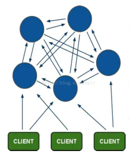

Redis-Cluster集群
redis最开始使用主从模式做集群，若master宕机需要手动配置slave转为master；后来为了高可用提出来哨兵模式，该模式下有一个哨兵监视master和slave，若master宕机可自动将slave转为master，但它也有一个问题，就是不能动态扩充；所以在3.x提出cluster集群模式。
redis-cluster设计
Redis-Cluster采用无中心结构，每个节点保存数据和整个集群状态,每个节点都和其他所有节点连接。

其结构特点：
- 所有的redis节点彼此互联(PING-PONG机制),内部使用二进制协议优化传输速度和带宽。
- 节点的fail是通过集群中超过半数的节点检测失效时才生效。
- 客户端与redis节点直连,不需要中间proxy层.客户端不需要连接集群所有节点,连接集群中任何一个可用节点即可。
- redis-cluster把所有的物理节点映射到[0-16383]slot上（不一定是平均分配）,cluster 负责维护node<->slot<->value。
- Redis集群预分好16384个桶，当需要在 Redis 集群中放置一个 key-value 时，根据 CRC16(key) mod 16384的值，决定将一个key放到哪个桶中。
redis cluster节点分配
现在我们是三个主节点分别是：A, B, C 三个节点，它们可以是一台机器上的三个端口，也可以是三台不同的服务器。那么，采用哈希槽 (hash slot)的方式来分配16384个slot 的话，它们三个节点分别承担的slot 区间是：
- 节点A覆盖0－5460;
- 节点B覆盖5461－10922;
- 节点C覆盖10923－16383.
获取数据:
如果存入一个值，按照redis cluster哈希槽的算法： CRC16('key')384 = 6782。 那么就会把这个key 的存储分配到 B 上了。同样，当我连接(A,B,C)任何一个节点想获取'key'这个key时，也会这样的算法，然后内部跳转到B节点上获取数据
新增一个主节点:
新增一个节点D，redis cluster的这种做法是从各个节点的前面各拿取一部分slot到D上，我会在接下来的实践中实验。大致就会变成这样：
- 节点A覆盖1365-5460
- 节点B覆盖6827-10922
- 节点C覆盖12288-16383
- 节点D覆盖0-1364,5461-6826,10923-12287
同样删除一个节点也是类似，移动完成后就可以删除这个节点了。
Redis Cluster主从模式
redis cluster 为了保证数据的高可用性，加入了主从模式，一个主节点对应一个或多个从节点，主节点提供数据存取，从节点则是从主节点拉取数据备份，当这个主节点挂掉后，就会有这个从节点选取一个来充当主节点，从而保证集群不会挂掉
上面那个例子里, 集群有ABC三个主节点, 如果这3个节点都没有加入从节点，如果B挂掉了，我们就无法访问整个集群了。A和C的slot也无法访问。
所以我们在集群建立的时候，一定要为每个主节点都添加了从节点, 比如像这样, 集群包含主节点A、B、C, 以及从节点A1、B1、C1, 那么即使B挂掉系统也可以继续正确工作。
B1节点替代了B节点，所以Redis集群将会选择B1节点作为新的主节点，集群将会继续正确地提供服务。 当B重新开启后，它就会变成B1的从节点。
不过需要注意，如果节点B和B1同时挂了，Redis集群就无法继续正确地提供服务了。
Redis 哈希槽的概念
Redis 集群中内置了 16384 个哈希槽，当需要在 Redis 集群中放置一个 key-value
时，redis 先对 key 使用 crc16 算法算出一个结果，然后把结果对 16384 求余数，
这样每个 key 都会对应一个编号在 0-16383 之间的哈希槽，redis 会根据节点数量大
致均等的将哈希槽映射到不同的节点。
Redis 集群没有使用一致性hash, 而是引入了哈希槽的概念。
Redis 集群有16384个哈希槽,每个key通过CRC16校验后对16384取模来决定放置哪个槽.集群的每个节点负责一部分hash槽。这种结构很容易添加或者删除节点，并且无论是添加删除或者修改某一个节点，都不会造成集群不可用的状态。
使用哈希槽的好处就在于可以方便的添加或移除节点。
当需要增加节点时，只需要把其他节点的某些哈希槽挪到新节点就可以了；
当需要移除节点时，只需要把移除节点上的哈希槽挪到其他节点就行了；
在这一点上，我们以后新增或移除节点的时候不用先停掉所有的 redis 服务。
用了哈希槽的概念，而没有用一致性哈希算法，不都是哈希么？这样做的原因是为什么呢
Redis Cluster是自己做的crc16的简单hash算法，没有用一致性hash。Redis的作者认为它的crc16(key) mod 16384的效果已经不错了，虽然没有一致性hash灵活，但实现很简单，节点增删时处理起来也很方便。
为了动态增删节点的时候，不至于丢失数据么？
节点增删时不丢失数据和hash算法没什么关系，不丢失数据要求的是一份数据有多个副本。
还有集群总共有2的14次方，16384个哈希槽，那么每一个哈希槽中存的key 和 value是什么？
当你往Redis Cluster中加入一个Key时，会根据crc16(key) mod 16384计算这个key应该分布到哪个hash slot中，一个hash slot中会有很多key和value。你可以理解成表的分区，使用单节点时的redis时只有一个表，所有的key都放在这个表里；改用Redis Cluster以后会自动为你生成16384个分区表，你insert数据时会根据上面的简单算法来决定你的key应该存在哪个分区，每个分区里有很多key
为什么Redis集群有16384个槽
ps:CRC16算法产生的hash值有16bit，该算法可以产生2^16-=65536个值。换句话说，值是分布在0~65535之间。那作者在做mod运算的时候，为什么不mod65536，而选择mod16384？
其实我当初第一次思考这个问题的时候，我心里是这么想的，作者应该是觉得16384就够了，然后我就开始查这方面资料。
很幸运的是，这个问题，作者是给出了回答的！
地址如下:
https://github.com/antirez/redis/issues/2576
作者原版回答如下: The reason is:
Normal heartbeat packets carry the full configuration of a node, that can be replaced in an idempotent way with the old in order to update an old config. This means they contain the slots configuration for a node, in raw form, that uses 2k of space with16k slots, but would use a prohibitive 8k of space using 65k slots.
At the same time it is unlikely that Redis Cluster would scale to more than 1000 mater nodes because of other design tradeoffs.
So 16k was in the right range to ensure enough slots per master with a max of 1000 maters, but a small enough number to propagate the slot configuration as a raw bitmap easily. Note that in small clusters the bitmap would be hard to compress because when N is small the bitmap would have slots/N bits set that is a large percentage of bits set.
在握手成功后，连个节点之间会定期发送ping/pong消息，交换数据信息，如下图所示。
在这里，我们需要关注三个重点。
(1)交换什么数据信息 (2)数据信息究竟多大 (3)定期的频率什么样
到底在交换什么数据信息？
交换的数据信息，由消息体和消息头组成。 消息体无外乎是一些节点标识啊，IP啊，端口号啊，发送时间啊。这与本文关系不是太大，我不细说。
另外，消息头里面有个myslots的char数组，长度为16383/8，这其实是一个bitmap,每一个位代表一个槽，如果该位为1，表示这个槽是属于这个节点的。
到底数据信息究竟多大？ 在消息头中，最占空间的是myslots[CLUSTER_SLOTS/8]。这块的大小是: 16384÷8÷1024=2kb 那在消息体中，会携带一定数量的其他节点信息用于交换。 那这个其他节点的信息，到底是几个节点的信息呢？ 约为集群总节点数量的1/10，至少携带3个节点的信息。 这里的重点是:节点数量越多，消息体内容越大。
消息体大小是10个节点的状态信息约1kb。
那定期的频率是什么样的？ redis集群内节点，每秒都在发ping消息。规律如下
(1)每秒会随机选取5个节点，找出最久没有通信的节点发送ping消息 (2)每100毫秒(1秒10次)都会扫描本地节点列表，如果发现节点最近一次接受pong消息的时间大于cluster-node-timeout/2 则立刻发送ping消息 因此，每秒单节点发出ping消息数量为 数量=1+10*num（node.pong_received>cluster_node_timeout/2）
回答 (1)如果槽位为65536，发送心跳信息的消息头达8k，发送的心跳包过于庞大。 如上所述，在消息头中，最占空间的是myslots[CLUSTER_SLOTS/8]。 当槽位为65536时，这块的大小是: 65536÷8÷1024=8kb 因为每秒钟，redis节点需要发送一定数量的ping消息作为心跳包，如果槽位为65536，这个ping消息的消息头太大了，浪费带宽。 (2)redis的集群主节点数量基本不可能超过1000个。 如上所述，集群节点越多，心跳包的消息体内携带的数据越多。如果节点过1000个，也会导致网络拥堵。因此redis作者，不建议redis cluster节点数量超过1000个。 那么，对于节点数在1000以内的redis cluster集群，16384个槽位够用了。没有必要拓展到65536个。 (3)槽位越小，节点少的情况下，压缩比高 Redis主节点的配置信息中，它所负责的哈希槽是通过一张bitmap的形式来保存的，在传输过程中，会对bitmap进行压缩，但是如果bitmap的填充率slots / N很高的话(N表示节点数)，bitmap的压缩率就很低。 如果节点数很少，而哈希槽数量很多的话，bitmap的压缩率就很低。
ps：文件压缩率指的是，文件压缩前后的大小比。
综上所述，作者决定取16384个槽，不多不少，刚刚好！